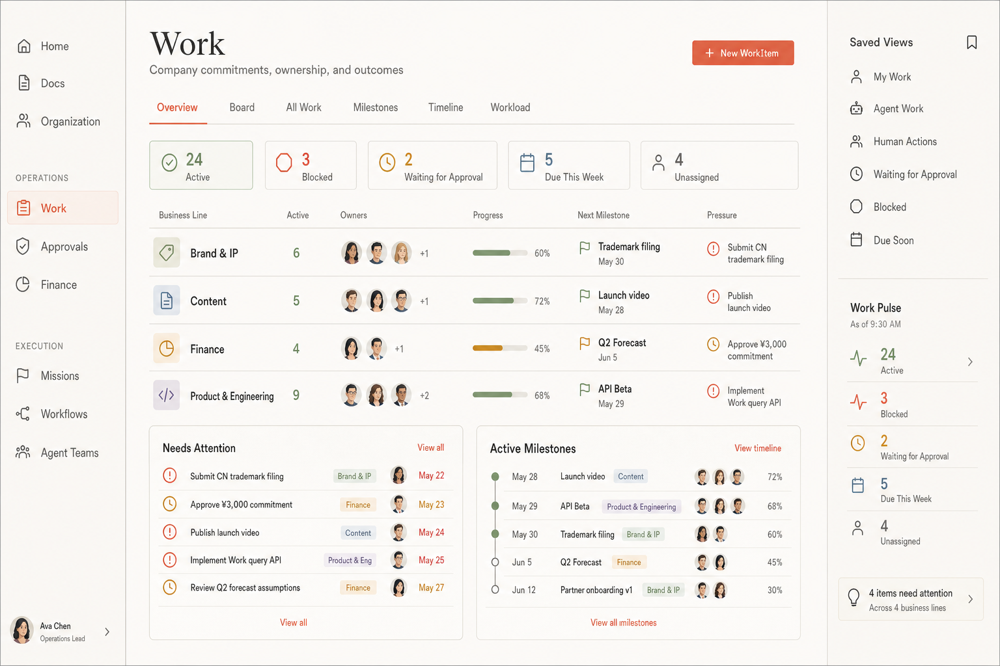
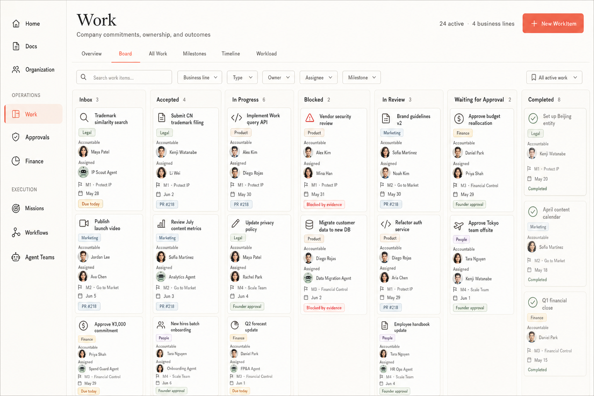
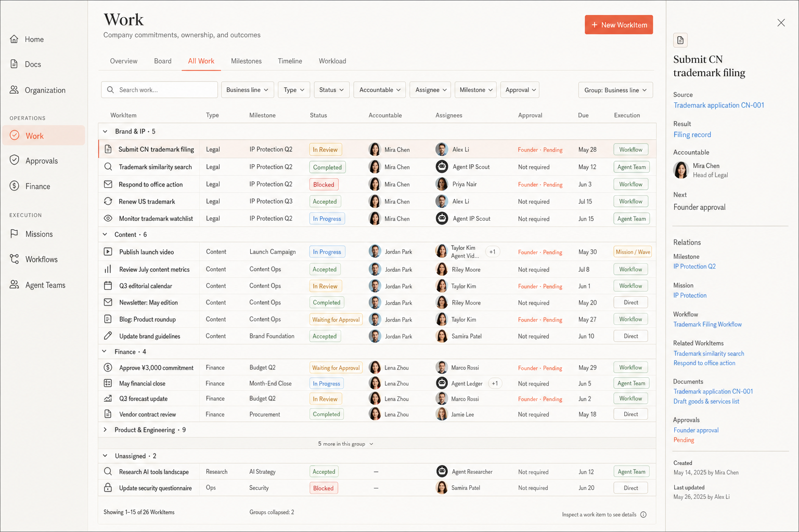
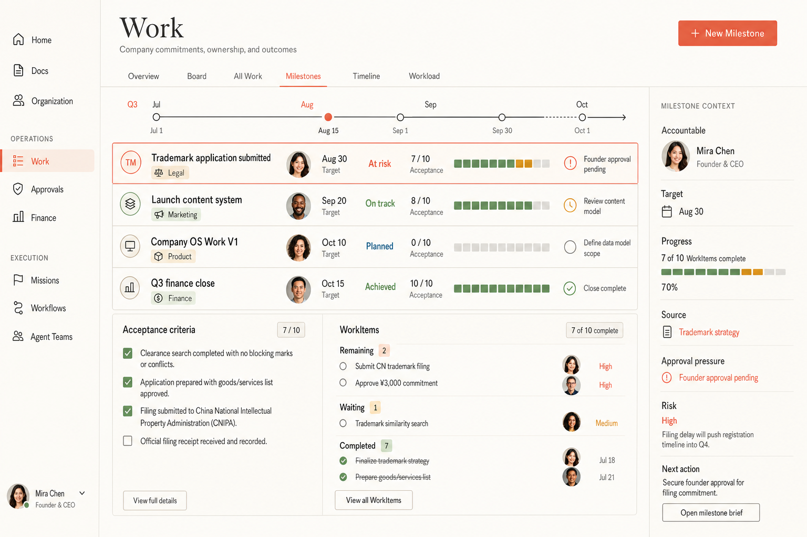
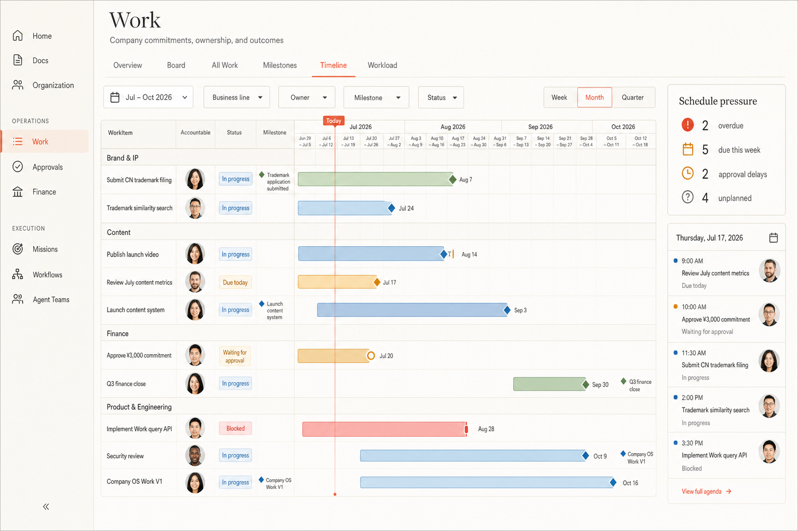
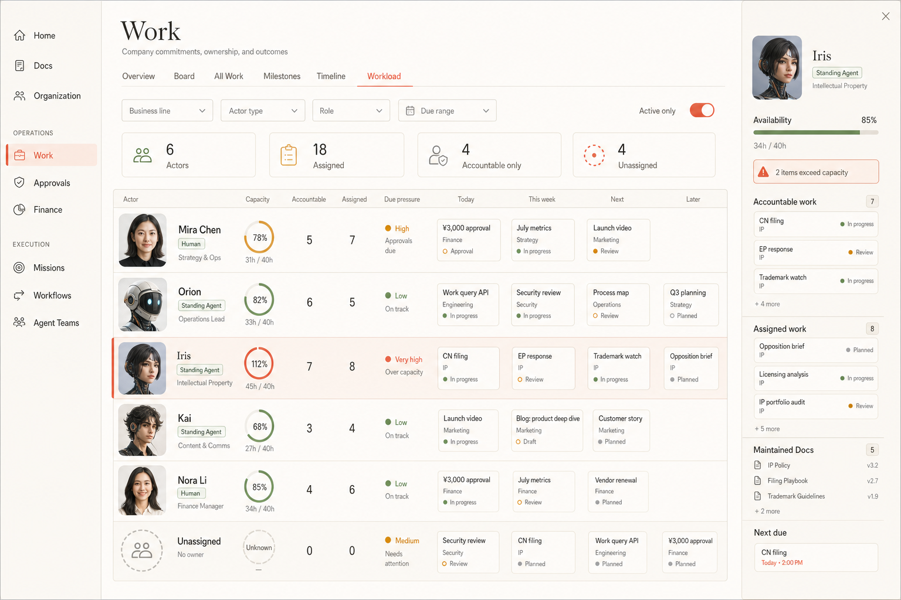
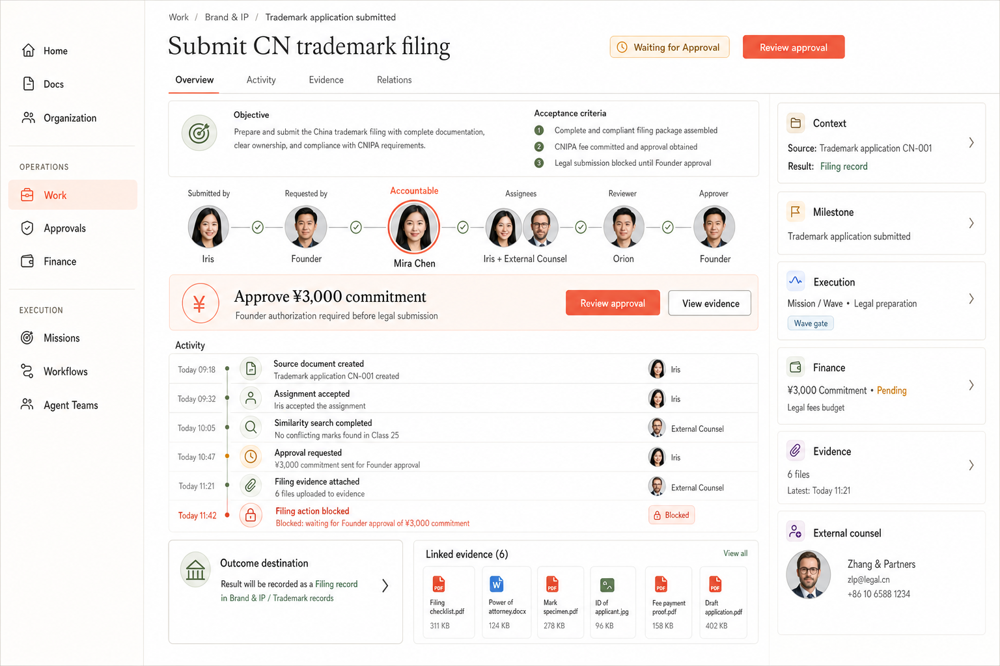

已实现单条商标 WorkItem、显式责任字段与生命周期 Action。当前截图是事实证据，但还没有原生 Milestone、多业务线查询和 Workload。
以下七张图是跨 Brand & IP、Content、Finance、Product & Engineering 的产品设计数据，用于讨论和实现验收。
原生模型、查询和页面完成后，在相同 viewport 捕获真实浏览器截图，并在此处形成 Current → Expected → Actual 的三段证据。
从当前单项工作到公司总账


最重要的变化：Work 不是“一个项目详情”，而是整家公司所有承诺的入口；任何视图都不能复制或篡改 WorkItem 真相。
Flow 与完整总账


Outcome、时间与组织容量




实现边界
先实现原生 Milestone、WorkType 与业务线关系和查询，再实现多视图投影。Board 拖拽必须调用受治理的 work_item.transition；Timeline 不产生依赖；Workload 不把临时 Agent Team member 冒充常驻 Agent。
设计图中的头像、图标和版式用于建立明确的视觉语言。最终产品以代码和语义组件实现，PNG 不作为 UI 运行时资产。